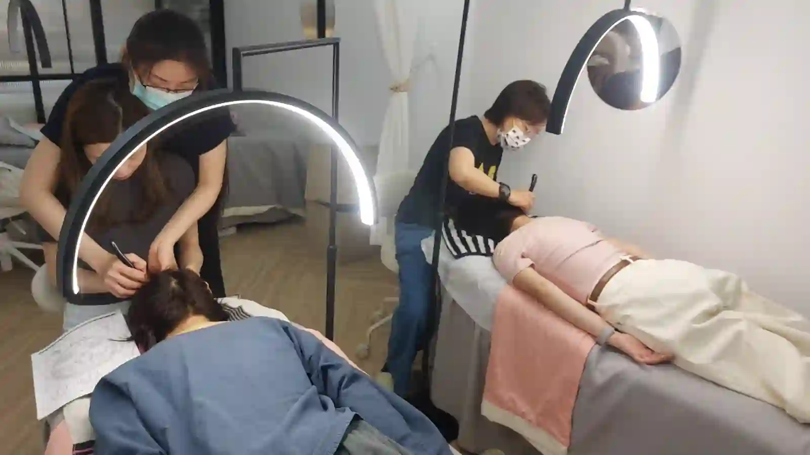

The Bojin Journal · Rituals & routines
Traveling With Your Bojin Stick: What to Pack, What to Skip

You've finally built a routine that works. Then a trip shows up on the calendar, and the first thing you think isn't the flight or the packing list. It's whether five minutes with your bojin stick is about to become one more thing you lose for a week.
A Taiwan-based teacher on packing a bojin stick for travel, getting through airport security, and a simplified 3-minute routine for hotel rooms. Remember: this is a gentle, supported self-care observation you can test on one side of your face—never a forceful press or medical treatment.
I get this question before almost every trip my students take: does the stick go in the carry-on, does it set off anything at security, and is it even worth bringing if the hotel bathroom has terrible lighting and none of your usual products. Short answer: yes, it's worth bringing, and it's simpler than you think.
Why travel throws your routine off
It's rarely the travel itself. It's the collapse of the small setup you didn't realize you'd built: the same mirror, the same oil within reach, the same five quiet minutes before bed. Take away the bathroom counter you know and the routine suddenly feels like effort instead of habit, so it's the first thing to get skipped.
Add in dry cabin air, less sleep, and a face that's puffier than usual from sitting for hours, and you've got a face that could actually use the routine more, at the exact moment it's hardest to reach for.
How the method travels with you
This is where having a method rather than a pile of skincare helps you. You're not packing a routine that depends on five products and a specific brand of oil. You're packing one small tool and a sequence you already know: warm, work, finish down the neck. The order and the angle are the same whether you're at your own sink or a hotel one.
The stick itself is the easy part. A stainless steel bojin stick is solid metal, about the size of a car key, and it doesn't care about cabin pressure, heat, or being tossed in a toiletry bag next to your toothpaste. It won't trigger anything at airport security any differently than a metal comb or a pair of tweezers would, and it's fine in a carry-on or checked bag either way. If you only have the gua sha stone you already own, that packs even easier and works the same way for this trip.
What actually needs a plan is the oil or cream that gives you slip. A full bottle is one more liquid to manage through security. A small refillable pot or a travel-size version of what you already use solves that in thirty seconds, and in a pinch, whatever moisturizer is already in your bag will get you through a few nights of gentle work.
You're not packing a routine that depends on five products. You're packing one small tool and a sequence you already know, and that sequence works exactly the same at any sink, anywhere.

The 5 steps, simplified for a hotel room

Skip the search for perfect lighting
You don't need your home mirror's lighting. Any mirror with your face visible is enough.
Warm first, even briefly
A few flat, gliding passes over the area you plan to work, using whatever oil or cream you have on hand.
Work the tension where you actually feel it
Follow the same order and angle you use at home. Travel isn't the time to learn something new, it's the time to keep the one thing you already know.
Keep it short on purpose
Two or three minutes on your face or jaw is enough to feel like you did something for yourself, without turning it into one more task on a long travel day.
Finish down the neck, every time
This part doesn't change no matter where you are.
Honest expectations, and a safety note
A shortened, travel version of your routine won't do everything your full routine does at home, and that's fine. The goal on the road is consistency, not intensity. A few gentle minutes a night keeps the habit alive so you're not starting over when you get back, which matters more than getting it perfect.
If packing light is your priority, the honest move is this: bring the stick, bring a small pot of whatever oil you already trust, and let the rest of your usual setup go for the week.
Quick answers
Will a bojin stick set off anything at airport security?
No. It's a small piece of solid stainless steel, similar to a metal comb or tweezers, and it's fine in either a carry-on or checked bag.
Do I need to bring my usual oil or cream?
Not the full bottle. A small refillable pot, a travel-size version, or even whatever moisturizer is already in your bag will give you enough slip for a short travel routine.
Should I still do all 5 steps while traveling?
Keep the order (warm, work, finish down the neck), but it's fine to shorten each part. Two or three minutes is enough to maintain the habit.
What if I miss a few days completely while traveling?
That's normal and it won't undo your progress. Pick the habit back up when you're home; consistency over time matters more than a perfect streak.
Want a printable travel routine?
Get my one-page, three-minute travel version you can screenshot before your next flight, plus the free video that shows the full sequence on a real face.
Watch the free 3-min videoYu-Ting Lan is a Taiwan-based international bojin instructor and the founder of Héhé Studio. She has taught her bojin method to more than a thousand students, from complete beginners to grandmothers, across Taiwan, Hong Kong, and Malaysia.